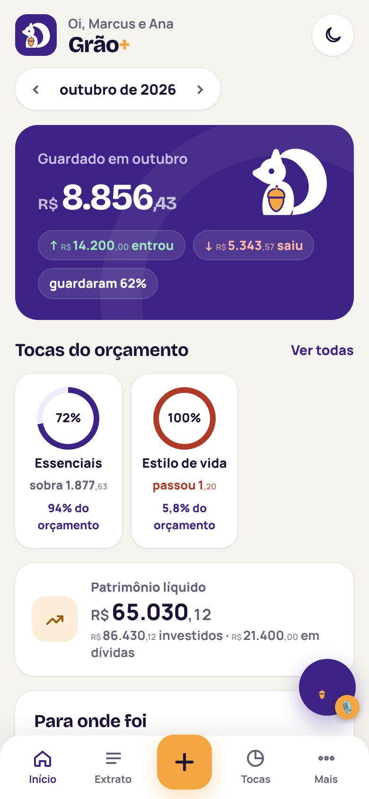
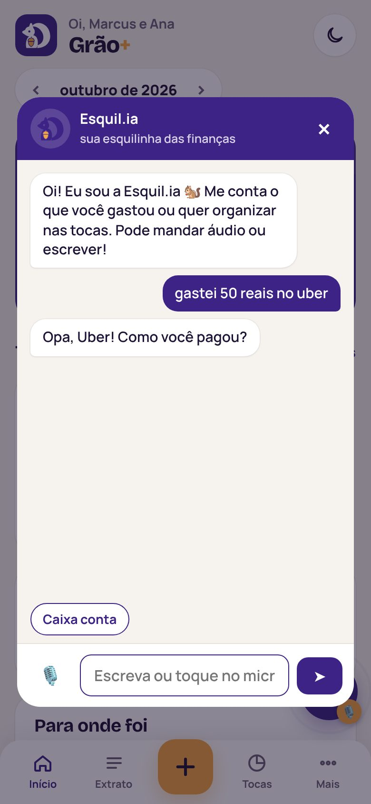
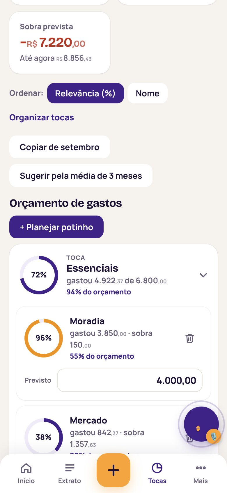

Início
Quanto sobrou no mês, tocas com % de uso, patrimônio, gastos por potinho e por banco e os últimos lançamentos.
Finanças pessoais
O Grão+ lê suas faturas e extratos, separa cada gasto no potinho certo e mostra quanto sobrou no mês. E a Esquil.ia, nossa esquilinha, anota seus gastos por voz. Investimentos, dívidas e cartões ficam no mesmo lugar, no seu celular.
Funciona no navegador e instala na tela inicial do celular, sem loja de aplicativos.

Veja funcionando
Gravado no próprio app, com dados de exemplo. Troque entre claro e escuro para ver os dois jeitos.

Conheça a Esquil.ia
Fale ou escreva do seu jeito. A Esquil.ia pergunta o que faltar (valor, data, conta, toca e potinho), mostra um resumo e só grava quando você confirma.
Orçamento em dois níveis
Cada gasto cai num potinho. Você define quanto cabe em cada potinho, e a toca soma tudo. Assim dá para ver de longe onde o dinheiro foi e, de perto, o que passou do ponto.
Traga o OFX, o CSV, o PDF da fatura ou até um print da tela do banco.
Itens repetidos e pagamentos de fatura já vêm desmarcados, para nada contar duas vezes.
O início mostra o saldo do mês e o uso de cada toca em porcentagem.

O que tem dentro
E tudo rápido: a tela muda na hora em que você toca, e o app sincroniza por trás.
Quanto sobrou no mês, tocas com % de uso, patrimônio, gastos por potinho e por banco e os últimos lançamentos.
Lançamentos do mês agrupados por dia, com busca e filtros por banco, potinho e pessoa.
Compras agrupadas por fatura, pelo fechamento e vencimento de cada cartão. Pagamentos parciais ou totais e consumo do limite.
Suas aplicações com valor aplicado, valor atual, rendimento e a distribuição entre elas.
Saldo, parcelas, juros e a data de quitação. Um toque em “Pagar parcela” e a conta se atualiza.
Fale “paguei 80 de luz” e a Esquil.ia monta o lançamento. Você confere e confirma.
Toque num potinho e veja tudo o que entrou nele no mês, quanto já foi e quanto ainda cabe.
Valor que volta para a conta ou para o cartão entra como estorno e abate do potinho certo.
Até 3 pessoas no mesmo espaço, cada uma com seu login. Filtre o extrato por quem gastou.
Importação
Arquivos simples são lidos no próprio navegador. PDFs, prints e textos colados são lidos por inteligência artificial e passam pela sua conferência antes de entrar.
O extrato padrão dos bancos, lido direto no aparelho.
Planilhas exportadas do app ou do internet banking.
A fatura do cartão como ela chega no e-mail.
Uma captura da tela do app do banco, ou o texto copiado e colado.
Seus dados
Cada cliente tem um banco separado, isolado dos demais. Nada se mistura.
Senhas protegidas com PBKDF2. Todo acesso novo começa com senha provisória, trocada no primeiro login.
Escolha o fundo claro, escuro ou automático, e instale o Grão+ como app na tela inicial.
Planos
A cobrança é recorrente no cartão de crédito: sai uma mensalidade por mês e o valor do ano não fica preso no seu limite.
R$ 9,90 /mês
Compromisso de 12 meses, cobrado mês a mês no cartão. Sai R$ 118,80 no ano, R$ 60,00 a menos que o mensal.
Quero o anualDúvidas
Não. O Grão+ abre no navegador e pode ser instalado na tela inicial do Android ou do iPhone, como qualquer app.
Não. Você exporta o extrato ou a fatura do banco e importa no Grão+. Assim ninguém precisa da sua senha do banco.
No mês do vencimento da fatura. O Grão+ usa o fechamento e o vencimento de cada cartão para colocar a compra na fatura certa.
Na conferência, os lançamentos repetidos já aparecem desmarcados. Pagamentos de fatura também, para o gasto não contar em dobro.
Não. Ela pergunta o que faltar, mostra um resumo do lançamento e só grava depois que você confirma.
Só a Esquil.ia (conversas, voz e leitura de PDFs e prints) pausa até o mês seguinte. OFX, CSV, lançamentos à mão e todo o resto continuam funcionando normalmente.
Junte os extratos, crie seus potinhos e descubra quanto sobra de verdade no fim do mês.
Abrir o Grão+